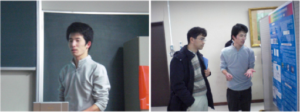
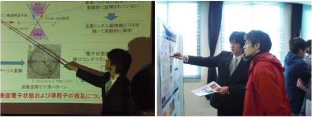
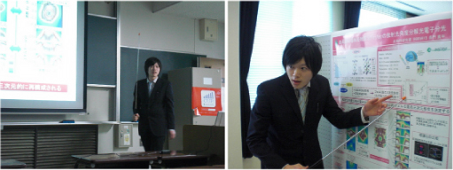
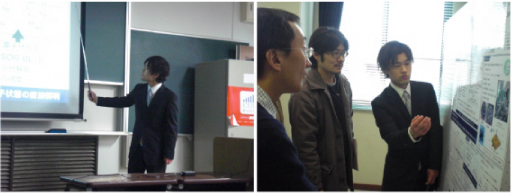
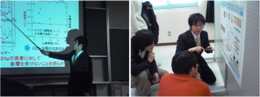

09 年度 卒業論文発表会
広島大学理学部で 12 日、理学部物理科学科に在籍する４年生による卒業研究の発表会が開かれた。光物性研究室に在籍する長井、金、長門、羽渕、宮原は、座学や物性セミナーから知識を学び、自分の手で実験を行うことで理解を深めてきた。発表会では１年間取り組んできた研究を口頭とポスターにより発表し、議論を交わした。
長井 崇憲
「固体の電子構造決定のための分光学的手法」

金 聖憲
「Scanning tunneling spectroscopy of topological insulator Bi2Se3」

| 長門 真平
「鉄系高温超伝導体母物質 SrFe2As2 の放射光角度分解光電子分光」
 |
羽渕 隆文
「一次元 Pt 錯体の高分解能光電子分光」

宮原 寛和
「Ag/Bi(111)/Si(111) のスピン分裂バンドの直接観測」
